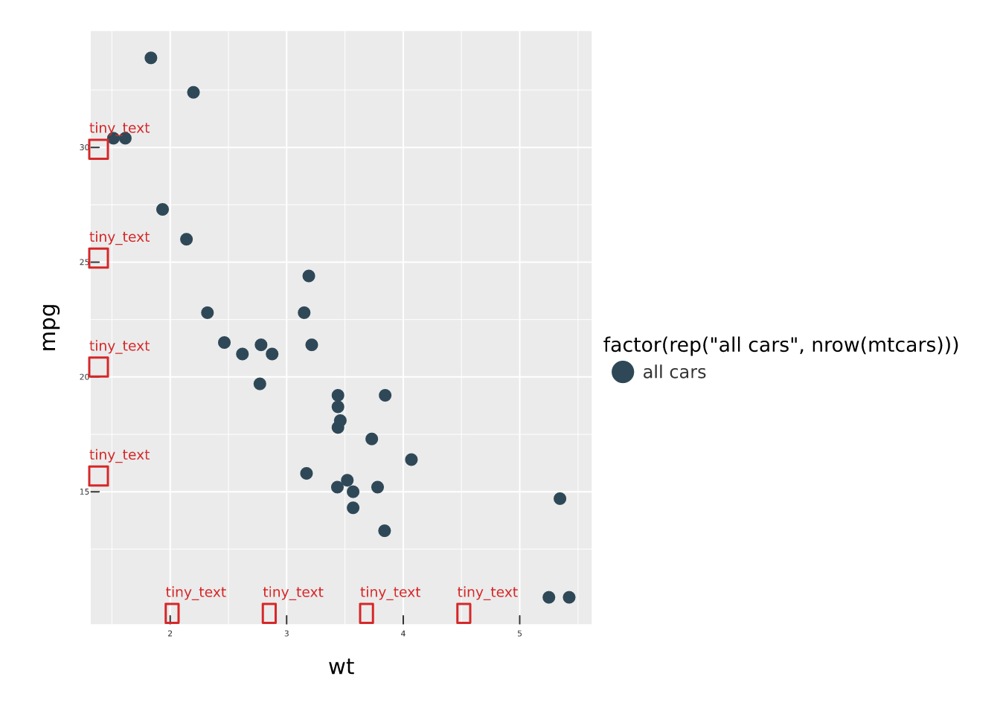

p <- vplot(mtcars) |>
mark_point(x = wt, y = mpg, color = hp)
plot_alt(p)
#> [1] "A scatter plot. It plots mpg (vertical axis) against wt (horizontal axis), where colour shows hp. Based on 32 observations."A chart that a screen-reader user cannot perceive, or that a keyboard user cannot operate, excludes people. The vellum ecosystem treats accessibility as part of the output contract rather than an afterthought: every plot you compile starts from a usable baseline — a title and a generated text alternative, an SVG that announces itself as an image, a tagged PDF, and a widget you can operate without a mouse.
A baseline is not compliance. A generated description can say what is plotted but not what it means. plot_lint() now checks your colour contrast and text legibility (see below), but nothing decides whether your takeaway is legible. What the ecosystem removes is the boilerplate excuse: the mechanics are already in place, so the remaining work is editorial. This article is the cross-package guide to both halves.
The work is split across the three packages along the same seam as everything else:
- vellumplot (this package) is the author. It generates the plot’s text alternative and hands it, with the title, to the scene.
- vellum is the emitter. It turns that title/description into an accessible SVG and a tagged PDF.
- vellumwidget is the interactive layer. It makes the widget keyboard- and screen-reader-navigable.
Alt text: the text alternative
The single most important thing a chart needs is a text alternative, a prose sentence or two describing what it shows (WCAG 1.1.1). vellumplot writes one for every plot automatically, from the spec it already has:
The generated description names the chart type, what is mapped to each axis and to colour/size, the number of observations, and any faceting. It is a sensible default, not a substitute for editorial judgement. The auto text says what is plotted, not what it means. When you know the takeaway, write it:
p <- p |>
labs(
title = "Heavier cars use more fuel",
alt = paste(
"Scatter plot of fuel economy against weight for 32 cars.",
"Fuel economy falls roughly linearly as weight rises, from about",
"34 mpg at 1.5 tons to about 10 mpg at 5 tons."
)
)
plot_alt(p)
#> [1] "Scatter plot of fuel economy against weight for 32 cars. Fuel economy falls roughly linearly as weight rises, from about 34 mpg at 1.5 tons to about 10 mpg at 5 tons."labs(alt =) always wins over the automatic text. plot_alt() returns whichever applies, so you can inspect exactly what assistive technology will receive.
What the accessible SVG emits
At the compile seam the plot title becomes the scene’s accessible name and plot_alt() becomes its description. vellum emits these as the reliable screen-reader pattern: role="img" with <title> and <desc> referenced by aria-labelledby:
f <- tempfile(fileext = ".svg")
render_plot(p, f)
svg <- paste(readLines(f), collapse = "\n")
# the opening <svg> tag plus its <title>/<desc>
regmatches(svg, regexpr("<svg[^>]*>.*?</desc>", svg, perl = TRUE))
#> [1] "<svg xmlns=\"http://www.w3.org/2000/svg\" width=\"576\" height=\"384\" viewBox=\"0 0 576 384\" role=\"img\" aria-labelledby=\"vl8abe9a1e-t vl8abe9a1e-d\"><title id=\"vl8abe9a1e-t\">Heavier cars use more fuel</title><desc id=\"vl8abe9a1e-d\">Scatter plot of fuel economy against weight for 32 cars. Fuel economy falls roughly linearly as weight rises, from about 34 mpg at 1.5 tons to about 10 mpg at 5 tons.</desc>"A screen reader announces the title as the image’s name and the description on request. This happens for every compiled plot; you never have to remember to turn it on. (A plot with no title still carries the auto-generated description, so it is never a mute image.)
Accessible PDF
The same title/description drive a tagged PDF (the basis of PDF/UA) when you export to .pdf. The chart becomes a Figure in the document’s structure tree, carrying the description as its Alt text, so a PDF reader can announce it:
render_plot(p, "fuel.pdf") # a tagged PDF: /StructTreeRoot + a Figure with AltTagging is automatic and additive. A plot with no title/description exports as an ordinary, untagged PDF exactly as before. (Strict PDF/UA-1 validation is a planned follow-up; the tag tree and Alt ship today.)
The chart is a single Figure carrying the one description — the individual marks are its visual content, tagged as artifacts rather than each becoming its own announced figure. That is deliberate: a screen reader should hear the plot’s text alternative once, not read out every line, point, and label (still less the internal identifiers a mark carries for provenance and interactivity). Gridlines and other furniture are artifacts for the same reason.
Colour, contrast, and legibility
Alt text and tags make a plot perceivable to assistive technology. A separate question is whether the picture itself is legible — text large enough to read, contrast high enough to see, and information that does not vanish for a colour-blind viewer. Three tools form a loop: see the problem, flag it, fix it.
See it: render_plot(cvd = )
About 1 in 12 men has some form of colour-vision deficiency, most commonly red–green. render_plot(cvd = ) renders a .png through a simulation of how a palette reads for such a viewer — "protanopia", "deuteranopia", "tritanopia", or "achromatopsia" — so you can see a failing palette instead of guessing:
p <- vplot(mtcars) |> mark_point(x = wt, y = mpg, color = factor(cyl))
render_plot(p, "normal.png")
render_plot(p, "deuteranopia.png", cvd = "deuteranopia") # red-green previewSimulation is raster-only (it is a pixel operation), so it is ignored for .svg/.pdf.
Flag it: plot_lint()
plot_lint() compiles the plot and reports the legibility problems a green test suite hides: text below a readable size, contrast under the WCAG threshold, two palette colours a colour-blind reader cannot tell apart, labels that overlap or fall off the panel (all judged in real device pixels by the engine), plus grammar-level mistakes such as an encoding with a single level or a legend too long to read.
p_bad <- vplot(mtcars) |>
mark_point(x = wt, y = mpg, color = factor(rep("all cars", nrow(mtcars)))) |>
theme(axis.text = element_text(size = 4))
plot_lint(p_bad)
#> 9 lint findings (8 warnings):
#> ✖ [tiny_text] text: 5.3 px tall - below the 7 px legibility floor
#> ✖ [tiny_text] text: 5.3 px tall - below the 7 px legibility floor
#> ✖ [tiny_text] text: 5.3 px tall - below the 7 px legibility floor
#> ✖ [tiny_text] text: 5.3 px tall - below the 7 px legibility floor
#> ✖ [tiny_text] text: 5.3 px tall - below the 7 px legibility floor
#> ✖ [tiny_text] text: 5.3 px tall - below the 7 px legibility floor
#> ✖ [tiny_text] text: 5.3 px tall - below the 7 px legibility floor
#> ✖ [tiny_text] text: 5.3 px tall - below the 7 px legibility floor
#> ℹ [single_level_scale] scale:color: The color scale has a single level (all
#> cars): the encoding conveys nothing and its legend is redundant.A well-made plot lints clean:
plot_lint(vplot(mtcars) |> mark_point(x = wt, y = mpg))
#> ✔ No lint findings.Each finding is a row: rule, severity, node, message, and the device-px box the finding refers to. min_text_px and min_contrast set the thresholds, and every other argument of vellum::vl_lint() comes through too — exclude to accept a finding you have already judged, cvd to choose which colour-vision deficiency to check, rules to run one rule on its own.
Because the findings carry their boxes, the report can be drawn onto the plot instead of read:
scene <- vellum::as_vellum_scene(p_bad)
vellum::display(vellum::vl_lint_overlay(scene, plot_lint(p_bad)))
And it can gate a test suite, which is the point of flagging things at all:
test_that("the figure is legible", {
vellum::vl_lint_assert(my_plot())
})The grammar rules are not a separate mechanism. vellumplot registers them in the engine’s own rule registry, so vellum::vl_lint_rules() lists them, rules = selects them, and a plain vellum::vl_lint() of a compiled plot reports the encoding problems alongside the geometric ones:
subset(vellum::vl_lint_rules(), tags == "grammar", c("rule", "description"))
#> rule
#> 14 legend_overflow
#> 19 single_level_scale
#> description
#> 14 A discrete encoding has more levels than a legend can show.
#> 19 A discrete encoding has one level, so it encodes nothing.Fix it: a redundant, non-colour encoding
The robust fix for a colour encoding that fails under CVD or in greyscale is to carry the same information a second way. Map the pattern aesthetic alongside fill, and reach for pattern_hatch() — a crisp vector hatch that stays sharp in PDF and survives being printed in black and white (unlike the raster tile patterns):
d <- data.frame(grp = c("A", "B", "C"), n = c(8, 5, 11))
vplot(d) |>
mark_bar(x = grp, y = n, fill = grp, pattern = grp) |>
scale_pattern(values = list(
pattern_hatch(angle = 0),
pattern_hatch(angle = 45),
pattern_hatch(angle = 90)
))Now each bar is distinguished by hatch and colour: the plot survives the CVD preview above, and plot_lint()’s contrast rule has less to complain about.
The interactive widget
A static image with alt text is enough for a picture, but an interactive chart must also be operable and explorable without a mouse. vellumwidget::as_widget() (accessibility on by default, a11y = TRUE) makes the widget a first-class interactive chart:
That widget:
- announces itself as an interactive chart (
role="graphics-document"), labelled from the title/description vellumplot already emitted (or an explicitas_widget(alt =)); - makes every mark focusable. Tab into the chart, then use the arrow keys to move between marks; each is a
graphics-symbollabelled with its tooltip. Enter or Space selects the focused mark; Escape leaves traversal mode; - announces the focused and selected mark through a polite
aria-liveregion, so a screen-reader user hears what they land on; - ships a visually-hidden data table listing every mark, so the underlying data is available even without traversing the chart.
Setting a11y = FALSE restores the previous behaviour exactly, but there is rarely a reason to.
Authoring checklist
-
Give plots a
title. It becomes the accessible name. -
Write a real
altwhen the automatic one misses the point: say what the chart shows, not only what it plots. Inspect it withplot_alt(). -
Set
tooltip/data_idon interactive marks: the tooltip is what a screen-reader user hears when focusing a mark, and appears in the data table. -
Don’t rely on colour alone. Pair a colour encoding with a redundant non-colour one —
shape, or apatternmapped throughscale_pattern()withpattern_hatch()— or label the extremes, so the chart is legible without colour perception. Preview it withrender_plot(cvd = ). -
Lint before you ship. Run
plot_lint()to catch tiny text, low contrast, overlaps and dead encodings while they are still cheap to fix.
See also
- vellum’s The scene contract vignette: the SVG/PDF a11y attributes and the additivity invariant, from the emitter’s side.
- vellumwidget’s interactivity article: the widget’s full keyboard and screen-reader model.